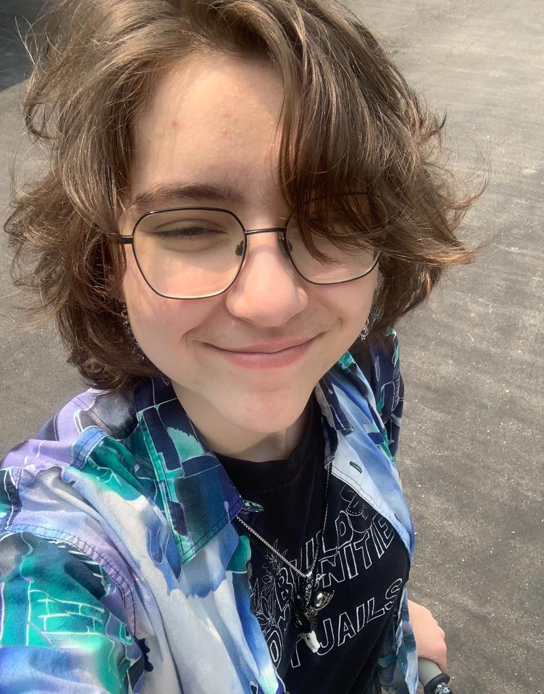

† About Me †
My name is Taro Routly (he/they) and I am very excited to jump back into HTML! I did a lot of HTML in high school, but I haven't done any major HTML projects in a few years. I am a multidiscplinary artist, varying from digital illustration & 3D modelling & animation, to audio production, cosplay and jewelry making! I was previously enrolled in the BIT IMD joint program with Carleton and Algonquin. However, after finishing my 1st semester, I realized that the college program was a far better fit for me in accessibility, time, and cost.
Outside of the school, I love reading, both fiction and nonfiction, with some of my favourite authors being Leah Lakshmi Piepzna-Samarasinha, Leigh Bardugo (Six Of Crows), Tamsyn Muir (The Locked Tomb), Jordan Ifueko (Raybearer), and Andrew Joseph White (Hell Followed With Us). I adore TTRPGs like Dungeons & Dragons as well as actual play shows like Dimension 20, Trials & Trebuchets, Not Another DND Podcast, Warding Bond and Worlds Beyond Number. Since moving to Ottawa in the fall, I was able to join my partner's DND campaign, which is my first time playing in a long term campaign! Audio dramas are also an art form I am extremely passionate about, having created a few in high school. My favourites are Camp Here & There, The Magnus Archives, and The Attic Monologues! Finally, I am incredibly passionate about activism and advocacy, and believe that intersectionality is crucial to our liberation!
Hobbies
- Reading
- TTRPGs
- Dungeons & Dragons
- Wanderhome
- Kids On Bikes / Kids On Brooms
- Audio Design
- Digital Illustration & Graphic Design
- Animation
- Cosplay
- Jewelry Making
"In the same way your heart feels and your mind thinks, you, mortal beings, are the instrument by which the universe cares. If you choose to care, then the universe cares. If you don't, then it doesn't." - Brennan Lee Mulligan, Dimension 20: Fantasy High S1E17